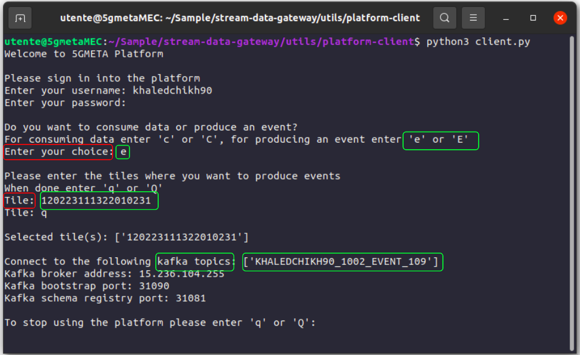
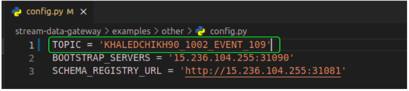
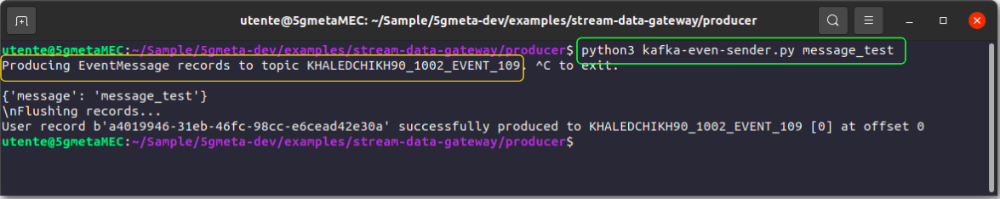

Guide to produce an event
Platform-client helper application
There is a guided applicaction that will help you to get the apropriate parameters from 5GMETA platform to get the data you need. You can execute it by downloading all content from folder:
Once you have donwload that software you can run it by executing:
$ python3 client.py
in your command line.
Client usage
Once you have executed the previous command you will be prompted for:
- 5GMETA username
- 5GMETA password
- Produce or Consume
- Tile
After entering your username/password, client will ask you if you want to: - Consume data from 5GMETA platform - Produce an event in a vehicle connected to 5GMETA platform
In our case we have decided to produce an event, so we push e.
Inmediately client will prompt you which tile to push an event to. 
The Client will prompt out a topic where you can push an event, copy paste it inside the config file 
Execute in your terminal indicating the MESSAGE (EVENT) you want to push to 5GMETA platform as follow:
$ python3 kafka-even-sender.py MESSAGE
It will prompt you with the success of sending your event to 5GMETA platform with your indicated TOPIC from the client. 